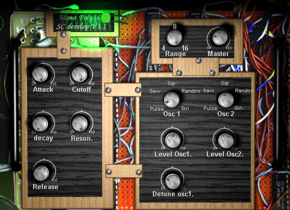
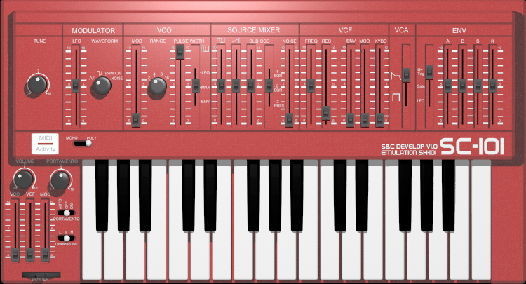
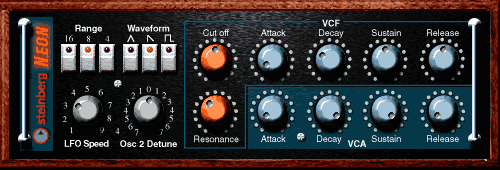
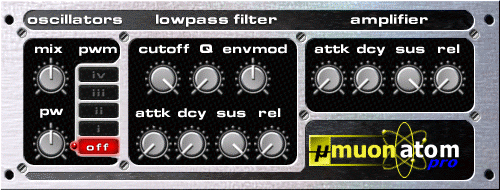
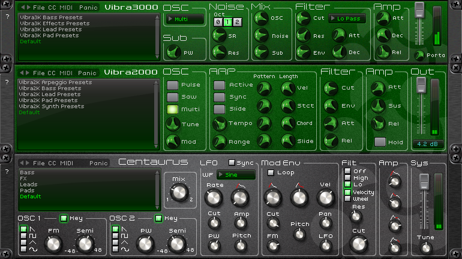
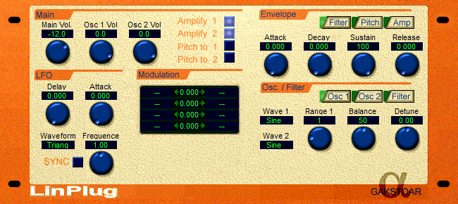
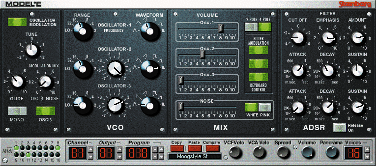
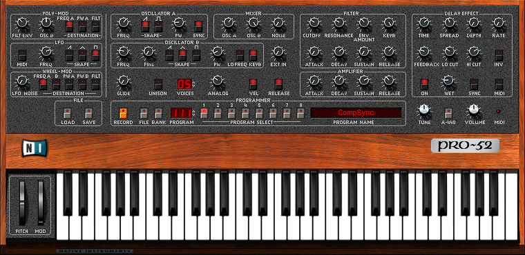
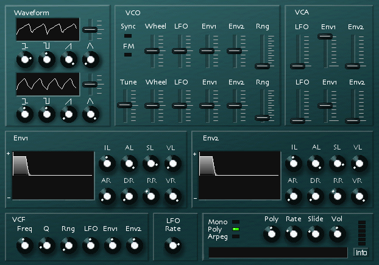
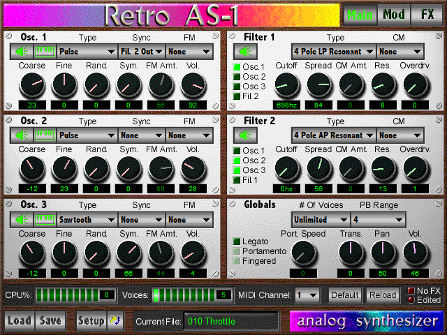

One of the earliest VST synths released ever. From Dec 1999 or Jan 2000. This thing is really bad. Pitch wheel and mod wheel do nothing. There is no filter envelope. It has no sustain envelope setting, so the closest you can get is to set decay to 'zero' for an infinite decay. It wasn't even free, it was being sold for $40 USD. It has EXTREME aliasing - the waveforms kinda sound nasty on their own, and the resonance peak is brutal and clips easily, so it is quite unpleasant for both speakers and ears. Also some of the knobs are seemingly backwards. The only good thing about it is you can detune the two oscillators against each other for that classic phase-y effect.
Here's my attempt to make something ambient with it, showing off the filter character and aliasing. Reverb is Supermassive.

A rather bad Roland SH-101 simulation from Jan 2000, built off of MonoPoly16. It's not much better. The brutal resonance is still here, and the envelopes are quite clicky and annoying.
Before I decided to never use it again, I tried making a quick Trance demo:

The very first VST synth from July 1999. Unfortunately it sucks. The waveforms are very low resolution, seemingly constructed with a limited number of sine harmonics, resulting in non-existent high frequencies, even with a fully open filter. There's supposedly two oscillators; you can detune them up to 7 semitones, but you can only select one waveform. There's a dedicated filter envelope but it doesn't have the usual "filter amount" control, so it can get a bit wonky depending on the cutoff and sustain values.
Here's an ambient demo made entirely with Neon, including the drums (the hats/snare by running Neon output through a reverb with very short decay/room size).

A marginally better synth than Neon, but no detunable oscillators, just a mix between PWM and Saw. It also aliases quite a bit. Atom was free and had no GUI, Atom Pro had a GUI, sounded exactly the same, but was not free, originally costing $30 USD.
Sound demo. External percussion samples and Reverb were used.

Three different synths, sharing an engine, each with their own feature set, but they're all quite limiting. Centaurus might be alright though.
Did this Trance intro with Vibra2000's supersaw/"multi" sound, the weakest synth of the three:

It's not pretty, and the modulation matrix can be very annoying (clicking the number resets the previous position to the 0), but it's interesting. It's got a decent feature set and was the first VST synths with a modulation matrix. Also one of the first VSTs ever released from Jan 2000. It was free (there was a paid version with more features). It's got a bit of aliasing but it's not that bad on the ears, it's more of a vibe. This synth was the basis of what would eventually be LinPlug AlphaFree 3, which still holds up today as a bread-n-butter synth.
A short test of a patch I made that detunes the two oscillators a fourth apart using the pitch envelope (which is tricky to do because the main oscillators can only be directly detuned by octaves):

Steinberg's first commercial VST synth, released at NAMM in Jan 2000 (but was largely finished by Aug 1999). Originally cost US$200, but they released it as freeware in 2011. It's intended to be a Minimoog simulation, but it's quite off and doesn't sound analog at all.
I was never a fan of this one, but it's still quite usable for basic sounds.
An old BOC-inspired thing I did using only Model-E, uses chorus effect liberally though.

Native Instrument's first VST was Pro-Five, released alongside Model-E at NAMM in Jan 2000. Pro-52 came out in June 2000, and really only added a delay effect and an "Analog" knob. I just prefer it because Pro-Five seemed to be buggy or unstable. There's also Pro-53 from Oct 2002 which revamped the UI slightly and added a few new features, which could be considered the de facto version.
Essentially it's a Prophet-5 simulation. It doesn't sound analog at all, but unlike Model-E it kinda sounds good and has character. I don't know if it's just the PWM and Osc Sync feature winning me over, but I consider it to have that classic "virtual analog" digital vibe that the Nord Lead had.
I've yet to do a demo track (probably put it off because I wanted to make sure I did it justice).

Before Synth1, Sylenth1, there was cesSynth1. It's a quirky little wave-shaping synth. You got two oscillators, and the waveform has 4 parameters. There's also Sync or FM, but it generally doesn't sound that good. The oscillators are low-fidelity, and the filter is quite bad (but not as bad as MonoPoly16). It's still one of the earliest VST synths, first released in March 2000.
Yet to do a proper demo.

Technically Retro AS-1 is from 1998 and predates VSTi, but this is the VST version. It originally cost US$200. It's effectively a semi-modular synth; there's a ton of routing options. But it's modular nature also makes it a pain in the ass to use. To use envelopes you have to assign the envelope to something first. There's only 8 routing slots, and if you want a volume envelope, filter envelope and velocity on volume, that's already 3 slots gone. The envelope editor is also absolutely terrible to use. It's pretty prone to aliasing and distortion, so it's very difficult to get "smooth" sounds without any fuzz.
And to make matters worse, it's also a pain in the ass to setup on modern OSes. It only works if you run your DAW as Administrator, which is the first time in 20 years I had to specifically do that. It can be unstable at times, requiring you to save often and restart your DAW, or might outright crash. You cannot automate any parameters directly, instead you can assign controls to up to 4 specific MIDI controllers, and automate that via MIDI CC. On the upside, it's 16-part multitimbral, though sometimes it acts up a bit and changes the current MIDI program when you don't expect it to.
The included presets aren't amazing, very digital sounding. It definitely shows its age, but it does have a bit of depth and character.
A house beat.
A short little demo showing off a cool (edited) patch I made. Drums are Drumaxx + Vocodex.